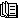

This package contains the power system models used in Example 2 of the paper "Power System Modeling for Identification and Control Applications using Modelica and OpenIPSL"
This package contains the power system models used in the paper "Power System Modeling for Identification and Control Applications using Modelica and OpenIPSL" by Luigi Vanfretti and Chrisopher R. Laughman, submitted for review to the IEEE CCTA 2024.
The models have the following dependencies:
The models were developed and tested with Dymola 2024X under MS Windows 11.
(c) 2024, Luigi Vanfretti, Rensselaer Polytechnic Institute, Troy, NY, USA and Chrisopher R. Laughman, Mitsubishi Electric Research Labs., Cambridge, MA, USA.
| Name | Description |
|---|---|
| Readme | Summary: modeling aspects and how to use this package |
|  References | Reference papers. |
| Contact | Contact |
| Copyright | Copyright |
| Base | Partial Models (for inheritance, not to be individiually simulated) |
| Interfaces | Partial models for output interfaces |
| Analysis | Models for simulation and linearization at multiple operating points through ramping of generation and load |
| CustomComponents | Customized component models and blocks developed for this model. |
| Utilities | Various utility functions and models enabling Dymola-specific options and commonly used icons. |
Summary: modeling aspects and how to use this package
The model included here was originally developed using similar component models and parameters as the 11-bus 4-machine 2-area power grid model presented in [4] and in the Example 12.6 of [5], but instead implemented using the OpenIPSL library. The starting point for development was the implementation included in OpenIPSL, which can be found under: OpenIPSL.Examples.TwoAreas.Two_Areas_PSSE_AVR
It has been substantially modified to meet the needs of the work in [1]-[3]. These differences are mainly in how the generator units where modeled, some of which are summarized below.
First, we note that the following components from OpenIPSL are used to build the individual power plant models (also known as generator units):
These components are used to build the generator unit models for g1, g2, g3 and g4, shown in the figure below. You can also refer to the diagram layer of Example2.Base.Systems.sys. Each of the generator units are built as follows:
To create the multiple operating points using the model above, g1 (via uPm) and the load at bus 9 (via uLoad9) increase/decrease their active power generated and consumed, respectively. Consequently, there is a corresponding change in the speed deviation at all generators, and the turbine and governor in g1 and g3 were included to both keep the system stable and to facilitate the transition to new operating points. This is achieved in the examples within the package: Example2.Analysis. The package includes the examples "Ramping", "RampingRandmLoadAndInput" and "KchangeLinRamping", as well as some functions that automate the running and plotting. Inspecting the model Example2.Analysis.Ramping, shows how the changes in uPm and uLoad9 on the figure above are applied. As shown in the figure below, the component "ramping" is applied to both the input uPm (top connector to "plant") and uLoad9 (bottom connector).

To simulate and plot the results shown below, execute the the function Example2.Analysis.AutomationFunctions.simulate_and_plot_ramping,following the instructions below.

Observe that the plot above is very similar to that in Fig. 4 of [2]. To reproduce the results in Fig. 4 of [2], execute the function Example2.Analysis.AutomationFunctions.simulate_and_plot_inputs , which runs the model Example2.Analysis.RampingRandomLoadAndInput.
Please note that running this model takes substantial time compared to the "Ramping" example, the reason is that both random load and probing signals are added to the simulation which results in an additional computation burden.
An additional function, Example2.Analysis.AutomationFunctions.linearize_KchangeLinRamping, allows to linearize the model Example2.Analysis.KchangeLinRamping at any point in time while at the same time running the same simulation scenario as in the "Ramping" example above. Running the function outputs a linear model.
Copyright
(c) 2024. All rights reserved.
Luigi Vanfretti, Rensselaer Polytechnic Institute, Troy, NY, USA and Christopher R. Laughman, Mitsubishi Electric Research Labs., Cambridge, MA, USA.